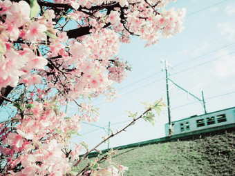

무궁화(無窮花, Hibiscus syriacus)는 아욱과의 낙엽관목으로, 대한민국의 관습헌법에 의해 나라꽃으로 여겨진다.[1] 또한 산림자원의 조성 및 관리에 관한 법률에서 무궁화를 특정하여 무궁화 심기에 노력하고 있다. 중국·인도가 원산지로 알려졌으며, 세계 여러 곳에서 가꾸어지고 있다. 무궁화의 종소명(種小名)이 '시리아쿠스(syriacus)'라고 하여 '시리아'와 관련이 있는 것처럼 보이지만 학계에서는 원산지가 시리아라는 것에 대한 의문이 제기되고 있다. 학자마다 주장이 다르듯이 명확하지가 않다. 무궁화는 꽃으로도 으뜸임을 옛날 중국에서는 군자의 기상을 지닌 꽃이라 하여 예찬했고 서양에서도 그들 이상의 꽃인 「샤론의 장미」(Rose of sharon) 라 하여 무척 사랑한다. 무궁화의 원산지를 중국, 인도, 이란, 시리아 등지로 알지만 기원전 4세기 전국시대 후의 저작으로 알려진 지리서, 《산해경》(山海經)에는 명확히 군자국을 지칭하며 근역(槿域)이라 했고 무궁화는 '아침에 꽃이 피고 저녁에 꽃이 지는 훈화'로 소개되어 있다.
